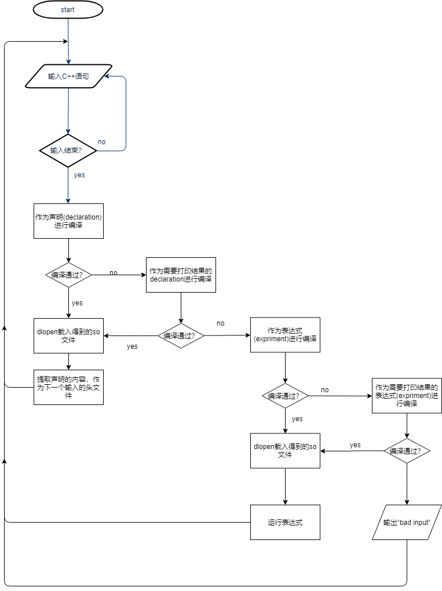

CxxREPL功能介绍
CxxREPL实现了一个即时C++交互执行器。如下图

功能如下： - 实现了变量定义和展示 - 实现了#include宏支持 - 实现了using语句 - 实现了函数定义 - 实现了函数调用 - 实现了C++11支持 ···
C++ REPL介绍
REPL是Read-Eval-Print Loop的缩写，和平时的C++语言编译-执行模式不同，代表一种边读取边执行的方式。 使用python语言进行编程的人很熟悉Python的解释器，它可以在Python输入一条语句之后直接运行输出结果， 比如输入
>>> 1+1
2
可以很方便的进行原型验证和进行一些算数的求解。 对于C++来说，进行编程很重要的依赖便是代码的智能提示和良好的个人编程素养，而对我们使用习惯Python的 idle的人来说，没有一个解释执行的环境是很不方便的。 可喜的是，cling是一个专为C++设计实现的交互式解释器，依赖llvm的工具链，可以完美的进行C++的解释和执行。 其实现方式是自定义clang前端，记忆中间状态，从而实现对C++程序“部分解析”，边解析边编译运行。 最大的缺点是项目庞大并且安装不方便。在官方下载包有300M的大小。
在2018cppcon中，实现了一个嵌入式的解释器，RCRL项目。该项目将输入分为once、vars、global， 分别进行不同的编译，将结果通过dlopen进行加载。该项目的输入需要用户对不同的输入类型注释，然后通过对不同的输入类型进行特殊的处理， 才能实现内容的加载。而且其hack的代码比较多，并且通用性有限。
CxxREPL的实现
为了实现一个轻量级的解释器，在该CxxREPL中，使用类似RCRL的技术对代码进行动态链接库的编译，并进行实时加载， 但是这里是通过编译器的报错进行输入类型的自动确定，并支持像cling中实时输出变量的值。
如下图为实现思路

及流程图

该程序通过将输入的内容分为“声明”和“表达式”两类，并将末尾缺少“；”的输入识别为需要打印结果的语句，将输入内容分为四类： - 普通声明 - 声明语句并打印声明结果 - 表达式 - 表达式并打印表达式计算结果
对于每种不同的类型依次进行编译，若编译通过则将动态链接库载入宿主程序，实现热加载。
普通声明
int a=1;
编译为
#include "other_declrations.h"
int a=1;
普通声明并打印声明结果
int a=1
编译为
#include "other_declrations.h"
int a=1;
void function(){
std::cout<< a << std::endl;
}
表达式
f();
编译为
#include "other_declrations.h"
void function(){
f();
}
表达式并打印执行结果
f()
编译为
#include "other_declrations.h"
void function(){
std::cout<< f() << std::endl;
}
技术背景————plt，got
实现一个C++语言的repl的难点主要是两个，一个是编译时的模块之间符号的共享，另一个是运行时状态的共享。 在cling中，可以在“部分解析”中，保存之前解析的状态，故而在对语言语法分析时可以正确找到所引用的符号。而RCRL中对变量通过lambda程序的执行，在宿主程序为符号进行注册等管理，保证符号只载入一次。在CxxREPL中，符号通过C++语言的extern特性来查找不同模块中的符号，实现程序的静态编译与动态符号的加载。
CxxREPL的实现本质上利用了ELF文件为了程序动态链接和加载而支持的符号运行是链接加载技术，通过在编译时加入“全局符号定位表”，方便程序的动态链接和重定位。
总结
本文对CxxREPL项目的实现做了介绍，并与常见的REPL程序进行了对比。CxxREPL深度利用ELF文件的动态加载技术，实现了在千行以内的一个C++ REPL demo，实现简单，功能较为完整。